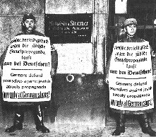

|
Doppelmord
von Dr. Rolf Kornemann
Etappen der Enteignung des
jüdischen Vermögens
Wenden wir uns nunmehr den Etappen der Enteignung des jüdischen Vermögens im einzelnen zu.
Eingeleitet wurde die "Verwirkung" des Eigentums durch drei Gesetze: Das "Gesetz über die
Einziehung kommunistischen Vermögens" vom 26. Mai 19337) und das "Gesetz über die
Einziehung volks- und staatsfeindlichen Vermögens" vom 14. Juli 19338) ermöglichten die
Wegnahme aller Vermögensgegenstände, die der KPD und der SPD ... gehört hatten.
Da sich die
Vorschriften auch auf das Vermögen von Organisationen staatsfeindlicher Bestrebungen erstreckten, war von
Anfang an das jüdische Vermögen betroffen.
9)
Die erste fiskalisch wirksame Maßnahme war die bereits von der Regierung Brüning 1931
eingeführte "Reichsfluchtsteuer".10)
Im "Dritten Reich" wurde sie - bis zum November-Pogrom - zu einem
systematischen Instrument des Vermögensentzugs auswandernder Juden ausgebildet, da für Juden eine
Steuerbefreiung nicht in Betracht kam. Diese wurde nur solchen Personen gewährt, denen das Finanzamt
bescheinigt hatte,
daß die Aufgabe des inländischen Wohnsitzes im deutschen Interesse liege.
"Ein
deutsches Interesse liegt,
so der Reichsfinanzhof, nur vor, wenn deutsche Kultur, deutsche Art und deutsches Wesen
durch eine planmäßige,
hierauf gerichtete Tätigkeit gefördert werden solle".11)
Insgesamt machte das Aufkommen aus dieser Steuer zwar nur einen verhältnismäßig
kleinen Teil des enteigneten
jüdischen Vermögens aus. Die Steuer war aber ein wichtiger Entscheidungsgrund
für die Juden über ihre
Auswanderung. Daß bis zum November-Pogrom viele reiche Juden zögerten, ins Ausland überzusiedeln, lag
nicht zuletzt an der Reichsfluchtsteuer. Sie wurde nach dem letzten geschätzten Steuerwert des Vermögensobjekts,
d.h. unabhängig von dem tatsächlich erzielten Verkaufspreis, berechnet. Jeder Verkauf unter Wert - und das traf auf
fast alle "Notverkäufe" von Immobilien zu - erhöhte den realen Steuersatz. Hinzu kam, daß
emigrierende Juden aufgrund der bestehenden Devisenbestimmungen auch nach der Steuerzahlung ihr Geld nicht ins
Ausland transferieren konnten, sondern es auf einem "Auswanderersperrmark-Konto" im Reich belassen
mußten. Der Verkauf von Sperrmark gegen Devisen war mit erheblichen Kursverlusten verbunden. Bis Anfang
1935 zahlte die Reichsbank noch die Hälfte des offiziellen Marktkurses aus, dann setzte sie die Quote bis auf
4 v.H. im September 1939 herab. Reichsfluchtsteuer, Auswanderersperrmark-Konten und willkürliche
Wechselkursmanipulationen waren Mittel einer scheinbar legalen Enteignung. Bis zum November-Pogrom
mußten Juden mit etwas Vermögen entweder bereits über Geld im Ausland verfügen oder
die drohende Entwicklung, d.h. ihre Ausrottung, erkennen, um sich zur Auswanderung zu entschließen.
Mit dem "Gesetz über den Widerruf von Einbürgerungen und die Aberkennung der deutschen
Staatsangehörigkeit" vom 13. Juli 193312) konnte das Vermögen von Personen,
denen die deutsche Staatsangehörigkeit aberkannt worden war, d.h. insbesondere das der Emigranten,
eingezogen werden. Das Vermögen wurde dem Reich dann für verfallen erklärt, wenn der
Ausgebürgerte durch sein Verhalten im Ausland, "das gegen die Pflicht zur Treue gegen Reich und
Volk verstieß", die deutschen Belange geschädigt und/oder wenn er einer Rückkehraufforderung
des Reichsministeriums des Innern nicht Folge geleistet hatte. Nach den hierzu ergangenen Durchführungs-Verordnungen
konnten Grundstücke auf Antrag des zuständigen Finanzamts im Grundbuch auf den Namen des Reiches umgeschrieben
werden. Eine Bereinigung solcher Verhältnisse wurde bald als dringend notwendig erachtet, weil "das Bestehenbleiben
der Hypotheken an eingezogenen Grundstücken zu unerquicklichen Zuständen geführt hätte."
13)
Durch den Reichsparteitag 1935 in Nürnberg, der sich in Überheblichkeit "Reichsparteitag der
Freiheit" nannte, wurde die Garrotte weiter angezogen.
Hier erging neben dem "Gesetz zum Schutze des
deutschen Blutes und der deutschen Ehre"
14)
am gleichen Tag das "Reichsbürger Gesetz"
15).
Mittels dieses Gesetzes - bzw. durch die später ergangenen
13 Durchführungs-Verordnungen - wurden den Juden sämtliche
staatsbürgerliche Rechte genommen.
"Reichsbürger"
und damit alleiniger Träger der vollen politischen Rechte waren nur
Staatsangehörige deutschen oder artverwandten Blutes, die durch ihr Verhalten
bewiesen, daß sie gewillt und geeignet seien, in Treue dem deutschen
Volk und Reich zu dienen.
"Damit war der Jude vogelfrei und im Namen des
Gesetzes der Willkür der NS-Machthaber preisgegeben."
16) Bei den "Nürnberger Gesetzen" handelt es sich um das "teuflischste Gesetzeswerk", das die Geschichte Europas kennt.17)
Der auf dem Nürnberger Parteitag 1936 verkündete
Vierjahresplan, der die Phase der
beschleunigten Aufrüstung der deutschen Wehrmacht einleitete, hatte zum Ziel, das
gesamte Judentum haftbar zu machen für alle Schäden, "die durch einzelne
Exemplare dieses Verbrechertums der deutschen Wirtschaft und damit dem deutschen Volk
zugefügt werden".18)
Die Erhebung einer
"Judensondersteuer" aufgrund des Vierjahresplans verzögerte
sich allerdings um zwei Jahre, weil Göring als dessen Beauftragter Besorgnis geäußert
haben soll, wonach die nicht auszuschließende Reaktion der Weltöffentlichkeit auf die
Verkündung eines solchen Gesetzes hin eine  gewisse Gefahr für die Rohstoff- und Devisenlage
des Reiches bedeuten würde.19)
Am 26. April 1938 erging dann aber die "Verordnung über die Anmeldung des Vermögens von
Juden".20)
Jeder Jude hatte danach sein gesamtes in- und ausländisches Vermögen zu deklarieren und zu bewerten. Auf einem viele Seiten umfassenden Fragebogen wurde bis ins kleinste Detail über jede Kapitalanlage inkl. Lebensversicherung, über Luxusartikel und Kunstgegenstände Auskunft verlangt. Außerdem wurden die Juden durch verschiedene vage Hinweise und gezielte Gerüchte veranlaßt, ihr Vermögen nicht unter Wert anzugeben. Auf einer vom Reichswirtschaftsministerium abgehaltenen Pressekonferenz wurde angedeutet, den Juden solle die Bewertung ihres Besitzes selbst überlassen werden, damit der Eigentümer im Falle einer Vermögensübernahme durch den Staat entschädigt werden könne.21) Der Hinweis, nicht mehr als den deklarierten Wert gegebenenfalls zu vergüten, veranlaßte nicht wenige Juden, ihren Grundbesitz mit einem höheren als dem Steuerwert anzugeben.
Nach der "Reichskristallnacht" sollten die Juden eine Kontribution von einer
Milliarde Reichsmark gemäß der "Verordnung über eine Sühneleistung
der Juden deutscher Staatsangehörigkeit" vom 12. November 1938
22) bezahlen.
Aufgrund der "Verordnung über den Einsatz des jüdischen Vermögens"
vom 3. Dezember 193823),
konnte den Juden die Veräußerung ihrer Gewerbebetriebe und Grundstücke aufgegeben
werden. Ferner durften sie Immobilien nicht mehr erwerben. Bei der Zwangsversteigerung von
Grundstücken hatte das Vollstreckungsgericht Gebote zurückzuweisen, wenn Anlaß
zu der Annahme bestand, daß der Bieter Jude war. In der Reichshauptstadt Berlin wurde dem
Generalbauinspektor ein Vorkaufsrecht eingeräumt, wenn ein Jude ein im Gebiet der Reichshauptstadt
gelegenes Grundstück veräußerte.
Mit Inkrafttreten dieser Erlasse und Verordnungen wurde der psychische Druck auf jüdische
Grundstückseigentümer, zu veräußern, erhöht, "insbesondere, wenn es sich
um größere Objekte handelte, auf die einflußreiche Lokalgrößen, führende
NSDAP-Funktionäre und Polizei-Angehörige ein Auge geworfen hatten. Der 1939 emigrierte Rechtsanwalt
Neumann hat in seinen Aufzeichnungen eine persönliche Schilderung seiner Verhältnisse gegeben.
Ich zitiere aus seinem Bericht: "An einem Tag erhielten ich und einige Kameraden den Befehl,
uns nach dem
Abendappell (Anm.: Neumann saß im KZ Oranienburg ein) in der
Schreibstube zu melden. Wir mußten
Stunden um Stunden herumstehen ohne zu wissen, was uns erwartete. Schließlich hörten wir,
der Notar
sei noch nicht da. Wir waren alle Grundstücksbesitzer. Es war ziemlich kalt; vom frühen Morgen an
waren wir ohne wesentliche Nahrung auf den Beinen im Freien ohne Mütze, ohne Mantel. An diesem
Abend wäre ich auch bald umgekippt, zumal wir stundenlang auf einem Fleck stehen mußten.
Wir wurden schließlich einzeln hereingerufen. Die Polizei verlangte den Verkauf unserer Grundstücke.
Ich sollte meiner Frau eine notarielle Vollmacht erteilen. Ich wollte etwas über den Kaufpreis in die
Verkaufsvollmacht hereinnehmen. Der Notar erklärte: Ich muß es ablehnen, über den Preis
irgend etwas aufzunehmen. Den Preis bestimmt die Regierung. Wir unterschrieben natürlich alle. Was
hätten wir in unserer Lage auch tun sollen? Da der "Völkische Beobachter" in den
Blocks gehalten wurde, hatten wir ja die Gesetze gelesen, aber Gesetze gaben ja nur den Ton an.
Wesentlich war, was das volle Orchester des Parteiapparates daraus machte. Und das konnten wir im
KZ nicht wissen ... . Das Haus, um das sich viele Interessenten rissen, mußte meine Frau an einen
Kollegen verkaufen, der SA-Führer war. Wie er sagte, sehe es auch der Polizei-Hauptmann gern,
wenn er das Haus bekäme. Er bekam es dann auch, 9.000,-- DM billiger, als die anderen boten.
Angeblich hätte es sonst das Arbeitsamt für die Hälfte bekommen. Bei einer Weigerung
meiner Frau wäre ich wohl nicht so leicht aus dem KZ gekommen."
24)
Nach der "Auswanderer-Abgabe-Verordnung"
25) hatten aus Deutschland auswandernde Juden,
welche Mitglieder der Reichsvereinigung der Juden waren, dann eine außerordentliche Abgabe zu
leisten, wenn sie ein Vermögen von mehr als 10.000 Reichsmark hatten.
© Copyright by Dr. Rolf Kornemann
© Layout Birgit Pauli-Haack 1997
|